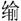

春秋公羊传卷二
隐公中
隐公二年
二年春，公会戎于潜。
夏五月，莒人入向。入者何？得而不居也。
无骇帅师入极。无骇者何？展无骇也。何以不氏？贬。曷为贬？疾始灭也。始灭,昉于此乎？前此矣。前此则曷为始乎此？托始焉尔。曷为托始焉尔？《春秋》之始也。此灭也，其言入何？内大恶，讳也。
秋八月庚辰，公及戎盟于唐。
九月，纪履来逆女。纪履者何？纪大夫也。何以不称使。婚礼不称主人。然则曷称？称诸父兄师友。宋公使公孙寿来纳币，则其称主人何？辞穷也。辞穷者何？无母也。然则纪有母乎？曰有。有则何以不称母？母不通也。外逆女不书，此何以书？讥。何讥尔？讥始不亲迎也。始不亲迎昉于此乎？前此矣。前此则曷为始乎此？托始焉尔。曷为托始焉尔。《春秋》之始也。女曷为或称女，或称妇，或称夫人？女在其国称女，在途称妇，入国称夫人。
冬十月，伯姬归于纪。伯姬者何？内女也。其言归何？妇人谓嫁曰归。
纪子伯、莒子盟于密，纪子伯者何？无闻焉尔。
十有二月乙卯，夫人子氏薨。夫人子氏者何？隐公之母也。何以不书葬？成公意也。何成乎公之意，将不终为君，故母亦不终为夫人也。
郑人伐卫。
隐公三年
三年春，王二月己巳，日有食之。何以书？记异也。日食则曷为或日或不日？或言朔或不言朔，曰某月某日朔，日有食之者，食正朔也，其或日或不日，或失之前，或失之后。失之前者，朔在前也。失之后者，朔在后也。
三月庚戌，天王崩。何以不书葬？天子记崩不记葬，必其时也。诸侯记卒记葬，有天子存，不得必其时也。曷为或言崩或言薨？天子曰崩，诸侯曰薨，大夫曰卒，士曰不禄。
夏四月辛卯，尹氏卒。尹氏者何？天子之大夫也。其称尹氏何？贬。曷为贬？讥世卿，世卿非礼也。外大夫不卒，此何以卒？天王崩，诸侯之主也。
秋，武氏子来求赙。武氏子者何？天子之大夫也。其称武氏子何？讥，何讥尔？父卒，子未命也。何以不称使？当丧未君也。武氏子来求赙何以书？讥，何讥尔？丧事无求，求赙非礼也，盖通于下。
八月庚辰，宋公和卒。
冬十有二月，齐侯、郑伯盟于石门。
癸未，葬宋缪公，葬者曷为或日或不日？不及时而日，渴葬也。不及时而不日，慢葬也，过时而日，隐之也。过时而不日，谓之不能葬也。当时而不日，正也。当时而日，危不得葬也。此当时，何危尔？宣公谓缪公曰：“以吾爱与夷则不若爱女。以为社稷宗庙主，则与夷不若女。盍终为君矣。”宣公死，缪公立，缪公逐其二子庄公冯与左师勃，曰：“尔为吾子，生毋相见，死毋相哭。”与夷复曰：“先君之所为不与臣国而纳国乎君者，以君可以为社稷宗庙主也。今君逐君之二子而将致国乎与夷，此非先君之意也，且使子而可逐，则先君其逐臣矣。”缪公曰：“先君之不尔逐可知矣，吾立乎此摄也，终致国乎与夷。”庄公冯弑与夷。故君子大居正，宋之祸，宣公为之也。
隐公四年
春王二月，莒人伐杞，取牟娄。牟娄者何？杞之邑也。外取邑不书。此何以书？疾始取邑也。
戊申，卫州吁弑其君完，曷为以国氏？当国也。
夏，公及宋公遇于清。遇者何？不期也。一君出，一君要之也。
宋公、陈侯、蔡人、卫人伐郑。
秋，翚帅师会宋公、陈侯、蔡人、卫人伐郑。翚者何？公子翚也。何以不称公子？贬。曷为贬？与弑公也。其与弑公奈何？公子翚谄乎隐公，谓隐公曰：“百姓安子，诸侯说子，盍终为君矣。”隐曰：“吾否，吾使修涂裘，吾将老焉。”公子翚恐若其言闻乎桓，于是谓桓曰：“吾为子口隐矣。隐曰：‘吾不反也。’”桓曰：“然则奈何？”曰：“请作难，弑隐公。”于钟巫之祭焉弑隐公也。
九月，卫人杀州吁于濮。其称人何？讨贼之辞也。
冬十有二月，卫人立晋。晋者何？公子晋也。立者何？立者不宜立也。其称人何？众立之之辞也。然则孰立之？石碏立之。石碏立之，则其称人何？众之所欲立也。众虽欲立之，其立之非也。